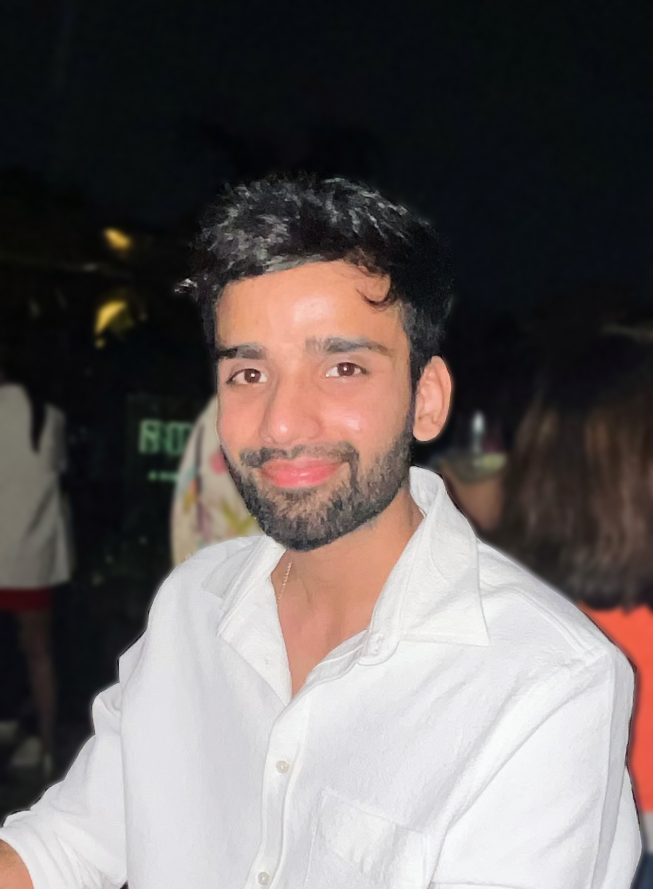

|
Manu Gaur Hi, I'm a research assistant at CVIT, IIIT-H under Dr. Makarand Tapaswi. I recently graduated from Delhi Technological University with a major in Applied Physics. I am originally from New Delhi, India. At Google I've worked on Glass, Lens Blur, HDR+, VR, Portrait Mode, Portrait Light, and Maps. I did my PhD at UC Berkeley, where I was advised by Jitendra Malik. I've received the PAMI Young Researcher Award. Email / Resume / Twitter / Google Scholar / Github |
 |
{kind=link}
ResearchI am interested in self-supervised learning, multimodal models, generative modelling and reinforcement learning. My long term goal is ... |

|
Shengbang Tong*, Ellis Brown*, Penghao Wu*, Sanghyun Woo, Manoj Middepogu, Sai Charitha Akula, Jihan Yang, Shusheng Yang, Adithya Iyer, Xichen Pan, Austin Wang, Rob Fergus, Yann LeCun, Saining Xie Under Review We provide a vision-centric exploration or cookbook in MLLMs. In other words, we systematically study visual representation, vision-language connector, instruction tuning data, training recipe and evaluation protocols in MLLMs. We propose new vision-centric benchmarks, spatial-aware connector, data collection and curation of instruciton data, and more! We also release very competitive 8B, 13B and 34B models on par with GPT-4V and Gemini. |